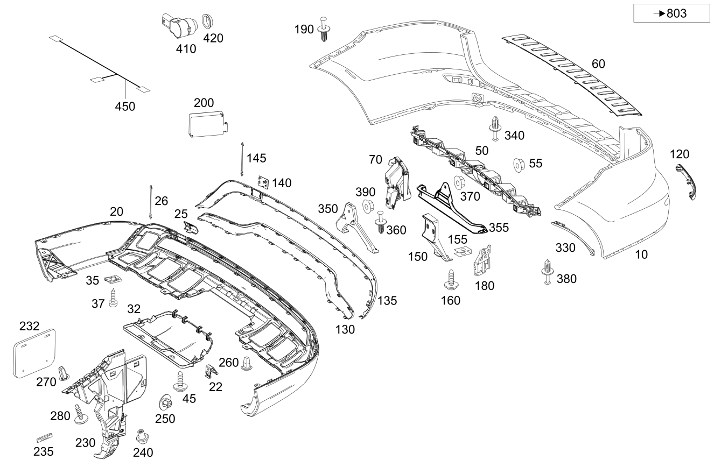

| № | Артикул | Название | Кол. | Примечание |
|---|---|---|---|---|
| 10 | A 166 885 03 25 | Облицовка бампера | 1 | Сзади сверху |
| 10 | A 166 885 99 25 | Облицовка бампера | 1 | Сзади сверху |
| 10 | A 166 885 06 25 | Облицовка бампера | 1 | Сзади сверху |
| 10 | A 166 885 93 25 | Облицовка бампера | 1 | Сзади сверху |
| 10 | A 166 885 09 38 | Облицовка бампера | 1 | Сзади сверху |
| 10 | A 166 885 10 38 | Облицовка бампера | 1 | Сзади сверху |
| 20 | A 166 885 19 25 | Облицовка бампера (VERKLEIDUNG STOSSFAENGER) | 1 | Сзади снизу |
| 20 | A 166 885 94 25 | Облицовка бампера (VERKLEIDUNG STOSSFAENGER) | 1 | Сзади снизу |
| 20 | A 166 885 19 25 | Облицовка бампера (VERKLEIDUNG STOSSFAENGER) | 1 | Сзади снизу |
| 20 | A 166 885 94 25 | Облицовка бампера (VERKLEIDUNG STOSSFAENGER) | 1 | Сзади снизу |
| 20 | A 166 880 44 40 | Облицовка бампера | 1 | Сзади снизу |
| 20 | A 166 885 11 38 | Облицовка бампера (VERKLEIDUNG STOSSFAENGER) | 1 | Сзади снизу |
| 20 | A 166 885 11 38 | Облицовка бампера (VERKLEIDUNG STOSSFAENGER) | 1 | Сзади снизу |
| 22 | A 008 988 68 78 | - Скоба (KLAMMER) | 2 | Сзади снизу |
| 25 | A 166 885 14 23 | - Крышка буксирной проушины (ABDECKUNG ABSCHLEPPOESE) | 1 | Буксирная проушина |
| 26 | A 220 885 00 59 | Удерживающая лента (FANGBAND) | 1 | Накладка буксирной проушины |
| 32 | A 166 885 23 24 | Накладка ТСУ (ABDECKUNG AHK) | 1 | Сзади снизу |
| 35 | A 003 994 86 45 | SPRING NUT (FEDERMUTTER) | 2 | Крепление облицовки; ST 4.8/2.5-5.0 MM |
| 37 | N 000000 000529 | Шуруп (BLECHSCHRAUBE) | 2 | Крепление облицовки; 4.8X19 |
| 45 | N 000000 003749 | Винт с неспадающей шайбой (KOMBISCHRAUBE) | 2 | Крепление облицовки; M6X20 |
| 50 | A 166 885 01 65 | Базовая опора бампера (GRUNDTRAEGER STOSSFAENGER) | 1 | Посередине |
| 50 | A 166 885 41 65 | Базовая опора бампера (GRUNDTRAEGER STOSSFAENGER) | 1 | Посередине |
| 55 | N 000000 006037 | ГАЙКА КОМБИНИРОВАННАЯ (KOMBIMUTTER) | 10 | Крепление базового несущего элемента; M6 |
| 55 | N 000000 008296 | ГАЙКА КОМБИНИРОВАННАЯ (KOMBIMUTTER) | 10 | Крепление базового несущего элемента; M6 |
| 55 | N 000000 006037 | ГАЙКА КОМБИНИРОВАННАЯ (KOMBIMUTTER) | 14 | Крепление базового несущего элемента; M6 |
| 55 | N 000000 008296 | ГАЙКА КОМБИНИРОВАННАЯ (KOMBIMUTTER) | 14 | Крепление базового несущего элемента; M6 |
| 60 | A 166 885 21 74 | Накладка подножки (BLENDE AUFTRITT) | 1 | Защита погрузочной кромки |
| 60 | A 166 885 33 74 | Накладка подножки (BLENDE AUFTRITT) | 1 | Защита погрузочной кромки |
| 70 | A 166 880 33 03 | Базовая опора бампера (GRUNDTRAEGER STOSSFAENGER) | 1 | Слева |
| 70 | A 166 880 57 03 | Базовая опора бампера (GRUNDTRAEGER STOSSFAENGER) | 1 | Слева |
| 70 | A 166 880 34 03 | Базовая опора бампера (GRUNDTRAEGER STOSSFAENGER) | 1 | Справа |
| 70 | A 166 880 58 03 | Базовая опора бампера (GRUNDTRAEGER STOSSFAENGER) | 1 | Справа |
| 120 | A 166 820 00 74 | Cветовозвращатель (RUECKSTRAHLER) | 1 | Сзади слева |
| 120 | A 166 820 00 74 | Cветовозвращатель (RUECKSTRAHLER) | 1 | Сзади слева |
| 120 | A 222 820 07 74 | Светоотражатель (REFLEXSTRAHLER) | 1 | Слева |
| 120 | A 166 820 01 74 | Cветовозвращатель (RUECKSTRAHLER) | 1 | Сзади справа |
| 120 | A 166 820 01 74 | Cветовозвращатель (RUECKSTRAHLER) | 1 | Сзади справа |
| 120 | A 222 820 08 74 | Светоотражатель (REFLEXSTRAHLER) | 1 | Справа |
| 130 | A 166 885 17 01 | Декоративная накладка (ZIERBLENDE) | 1 | Хром |
| 130 | A 166 885 23 74 | Декоративная накладка (ZIERBLENDE) | 1 | Хром |
| 130 | A 166 885 23 74 | Декоративная накладка (ZIERBLENDE) | 1 | Хром |
| 130 | A 166 885 23 74 | Декоративная накладка (ZIERBLENDE) | 1 | Хром |
| 130 | A 166 885 76 22 | Кожух зоны бампера (ABDECKUNG STOSSF.BEREICH) | 1 | К облицовке, снизу |
| 130 | A 166 885 04 01 | Бампер задний (STOSSFAENGER HINTEN) | 1 | К облицовке, снизу |
| 130 | A 166 885 76 22 | Кожух зоны бампера (ABDECKUNG STOSSF.BEREICH) | 1 | К облицовке, снизу |
| 130 | A 166 885 76 00 | Кожух зоны бампера (ABDECKUNG STOSSF.BEREICH) | 1 | К облицовке, снизу |
| 135 | A 166 885 22 74 | Декоративная накладка (ZIERBLENDE) | 1 | Хром |
| 135 | A 166 885 16 01 | Декоративная накладка (ZIERBLENDE) | 1 | Хром |
| 135 | A 166 885 22 74 | Декоративная накладка (ZIERBLENDE) | 1 | Хром |
| 135 | A 166 885 24 74 | Декоративная накладка (ZIERBLENDE) | 1 | Бампер сзади посередине |
| 140 | A 166 885 19 23 | Крышка буксирной проушины (ABDECKUNG ABSCHLEPPOESE) | 1 | Хром |
| 140 | A 166 885 23 23 | Крышка буксирной проушины (ABDECKUNG ABSCHLEPPOESE) | 1 | Буксирная проушина |
| 140 | A 166 885 23 23 | Крышка буксирной проушины (ABDECKUNG ABSCHLEPPOESE) | 1 | Буксирная проушина |
| 140 | A 166 885 19 23 | Крышка буксирной проушины (ABDECKUNG ABSCHLEPPOESE) | 1 | Хром |
| 140 | A 166 885 15 01 | Крышка буксирной проушины (ABDECKUNG ABSCHLEPPOESE) | 1 | Хром |
| 140 | A 166 885 83 22 | Крышка буксирной проушины (ABDECKUNG ABSCHLEPPOESE) | 1 | Буксирная проушина |
| 145 | A 166 885 00 59 | Удерживающая лента | 1 | Накладка буксирной проушины |
| 145 | A 166 885 00 59 | Удерживающая лента | 1 | Накладка буксирной проушины |
| 145 | A 166 885 00 59 | Удерживающая лента | 1 | Накладка буксирной проушины |
| 145 | A 220 885 00 59 | Удерживающая лента (FANGBAND) | 1 | Накладка буксирной проушины |
| 150 | A 166 885 01 40 | Держатель (HALTER) | 1 | Слева |
| 150 | A 166 880 45 00 | Держатель (HALTER) | 1 | Слева |
| 150 | A 166 885 02 40 | Держатель (HALTER) | 1 | Справа |
| 150 | A 166 880 46 00 | Держатель (HALTER) | 1 | Справа |
| 150 | A 166 885 01 40 | Держатель (HALTER) | 1 | Слева |
| 150 | A 166 880 45 00 | Держатель (HALTER) | 1 | Слева |
| 150 | A 166 885 02 40 | Держатель (HALTER) | 1 | Справа |
| 150 | A 166 880 46 00 | Держатель (HALTER) | 1 | Справа |
| 155 | A 004 994 17 45 | - SPRING NUT (FEDERMUTTER) | 1 | НА ДЕРЖАТЕЛЕ СЛЕВА; M6 |
| 155 | A 004 994 17 45 | - SPRING NUT (FEDERMUTTER) | 1 | К КРОНШТЕЙНУ СПРАВА; M6 |
| 160 | A 001 990 80 00 | Винт с 6-гр.гол. и шайбой (KOMBI-SECHSKANTSCHRAUBE) | 2 | Бампер к держателю; M6X19 |
| 160 | A 001 990 80 00 | Винт с 6-гр.гол. и шайбой (KOMBI-SECHSKANTSCHRAUBE) | 2 | Бампер к держателю; M6X19 |
| 160 | A 001 990 80 00 | Винт с 6-гр.гол. и шайбой (KOMBI-SECHSKANTSCHRAUBE) | 4 | Бампер к держателю; M6X19 |
| 160 | A 001 990 80 00 | Винт с 6-гр.гол. и шайбой (KOMBI-SECHSKANTSCHRAUBE) | 2 | Бампер к держателю; M6X19 |
| 170 | A 166 885 32 14 | Держатель (HALTER) | 1 | СИСТЕМА ПРЕДУПРЕЖДЕНИЯ О ВОЗМОЖНОМ СТОЛКНОВЕНИИ |
| 180 | A 166 885 01 14 | Держатель (HALTER) | 1 | Сзади слева |
| 180 | A 166 885 02 14 | Держатель (HALTER) | 1 | Сзади справа |
| 190 | A 124 990 04 92 | Распорная заклепка (SPREIZNIET) | 4 | КРЕПЛ. БАМПЕРА СНИЗУ; 6.5X18 |
| 200 | A 000 905 57 01 | Радарный датчик (RADARSENSOR) | 1 | Слева |
| 200 | A 000 905 57 01 | Радарный датчик (RADARSENSOR) | 1 | Справа |
| 200 | A 000 905 87 02 | Радарный датчик (RADARSENSOR) | 2 | Слева и справа |
| 200 | A 000 905 81 04 | Радарный датчик (RADARSENSOR) | 1 | Слева |
| 200 | A 000 905 99 06 | Радарный датчик (RADARSENSOR) | 1 | Слева |
| 200 | A 000 905 81 04 | Радарный датчик (RADARSENSOR) | 1 | Справа |
| 200 | A 000 905 99 06 | Радарный датчик (RADARSENSOR) | 1 | Справа |
| 200 | A 000 905 25 04 | Радарный датчик (RADARSENSOR) | 1 | Слева |
| 200 | A 000 905 25 04 | Радарный датчик (RADARSENSOR) | 1 | Справа |
| 200 | A 000 905 88 02 | Радарный датчик (RADARSENSOR) | 1 | СИСТЕМА УДЕРЖАНИЯ ПОЛОСЫ ДВИЖЕНИЯ / СИСТЕМА ПРЕДУПРЕЖДЕНИЯ О НАЕЗДЕ СЗАДИ |
| 200 | A 000 905 88 02 | Радарный датчик (RADARSENSOR) | 1 | СИСТЕМА УДЕРЖАНИЯ ПОЛОСЫ ДВИЖЕНИЯ / СИСТЕМА ПРЕДУПРЕЖДЕНИЯ О НАЕЗДЕ СЗАДИ |
| 200 | A 000 905 45 03 | Радарный датчик (RADARSENSOR) | 1 | Слева |
| 200 | A 000 905 25 04 | Радарный датчик (RADARSENSOR) | 1 | Слева |
| 200 | A 000 905 45 03 | Радарный датчик (RADARSENSOR) | 1 | Справа |
| 200 | A 000 905 25 04 | Радарный датчик (RADARSENSOR) | 1 | Справа |
| 205 | A 166 885 55 14 | Держатель (HALTER) | 1 | Датчик слева |
| 205 | A 166 885 56 14 | Держатель (HALTER) | 1 | Датчик справа |
| 205 | A 166 885 11 00 | Держатель (HALTER) | 1 | Датчик слева |
| 205 | A 166 885 12 00 | Держатель (HALTER) | 1 | Датчик справа |
| 210 | A 292 885 00 11 | Удерживающая пластина (HALTEPLATTE) | 2 | Датчик слева и справа |
| 210 | A 292 885 00 11 | Удерживающая пластина (HALTEPLATTE) | 2 | Датчик слева и справа |
| 215 | A 003 991 02 70 | Крепежная скоба (BEFESTIGUNGSKLAMMER) | 2 | Крепление кронштейна слева и справа |
| 215 | A 003 991 02 70 | Крепежная скоба (BEFESTIGUNGSKLAMMER) | 6 | Держатель слева и справа |
| 230 | A 166 880 11 12 | Крепежная планка (BEFESTIGUNGSSCHIENE) | 1 | Слева |
| 230 | A 166 880 15 12 | Крепежная планка (BEFESTIGUNGSSCHIENE) | 1 | Слева |
| 230 | A 166 880 12 12 | Крепежная планка (BEFESTIGUNGSSCHIENE) | 1 | Справа |
| 230 | A 166 880 16 12 | Крепежная планка (BEFESTIGUNGSSCHIENE) | 1 | Справа |
| 232 | A 251 682 00 41 | - Демпфирование (DAEMPFUNG) | 1 | Крепежная рейка, слева |
| 232 | A 251 682 00 41 | - Демпфирование (DAEMPFUNG) | 1 | Крепежная рейка, справа |
| 235 | A 003 991 02 70 | Крепежная скоба (BEFESTIGUNGSKLAMMER) | 6 | К задней стенке |
| 235 | A 003 991 02 70 | Крепежная скоба (BEFESTIGUNGSKLAMMER) | 4 | К задней стенке |
| 235 | A 003 991 02 70 | Крепежная скоба (BEFESTIGUNGSKLAMMER) | 4 | К задней стенке |
| 235 | A 003 991 02 70 | Крепежная скоба (BEFESTIGUNGSKLAMMER) | 2 | КРЕПЛЕНИЕ ВЕРХНЕЙ ЧАСТИ К НИЖНЕЙ ЧАСТИ |
| 235 | A 003 991 02 70 | Крепежная скоба (BEFESTIGUNGSKLAMMER) | 2 | КОЛЕСН. АРКА СЗАДИ СЛЕВА И СПРАВА |
| 235 | A 003 991 02 70 | Крепежная скоба (BEFESTIGUNGSKLAMMER) | 4 | К задней стенке |
| 240 | A 003 990 64 50 | Гайка с фланцем (SECHSKANTMUTTER M FLANSCH) | 4 | К крепежной рейке |
| 250 | A 201 990 00 50 | Пластмассовая гайка (KUNSTSTOFFMUTTER) | 4 | К крепежной рейке |
| 260 | A 000 998 25 85 | Дюбель (DUEBEL) | 2 | БАМПЕР НА БОКОВОЙ СТЕНКЕ |
| 270 | A 000 998 25 85 | Дюбель (DUEBEL) | 2 | К крепежной рейке |
| 280 | A 001 990 38 36 | болт (SCHRAUBE) | 4 | БАМПЕР НА БОКОВОЙ СТЕНКЕ; 5X21 |
| 290 | A 001 991 27 71 | Крепежная клипса (BEFESTIGUNGSCLIP) | 2 | ЖГУТ ПРОВОДКИ НА БАМПЕРЕ |
| 300 | A 166 885 29 24 | Кожух зоны бампера (ABDECKUNG STOSSF.BEREICH) | 1 | КОЖУХ КОЛЁСНОЙ АРКИ (ЛЕВ.) |
| 300 | A 166 885 30 24 | Кожух зоны бампера (ABDECKUNG STOSSF.BEREICH) | 1 | КОЖУХ КОЛЁСНОЙ АРКИ (ПРАВ.) |
| 330 | A 166 884 90 22 | Облицовка колесной арки (RADLAUFABDECKUNG) | 1 | Верхняя часть слева |
| 330 | A 166 884 91 22 | Облицовка колесной арки (RADLAUFABDECKUNG) | 1 | Верхняя часть справа |
| 330 | A 166 690 05 27 | накладка колесной арки (RADLAUFABDECKUNG) | 1 | Сзади слева |
| 330 | A 166 690 04 27 | накладка колесной арки (RADLAUFABDECKUNG) | 1 | Сзади справа |
| 335 | A 166 884 97 22 | Облицовка колесной арки (RADLAUFABDECKUNG) | 1 | НИЖНЯЯ ЧАСТЬ СЛЕВА |
| 335 | A 166 884 98 22 | Облицовка колесной арки (RADLAUFABDECKUNG) | 1 | НИЖНЯЯ ЧАСТЬ, СПРАВА |
| 340 | A 124 990 04 92 | Распорная заклепка (SPREIZNIET) | 2 | КРЕПЛЕНИЕ ОБЛИЦОВКИ СЛЕВА И СПРАВА; 6.5X18 |
| 350 | A 164 880 51 14 | Держатель (HALTER) | 1 | СЗАДИ В ЦЕНТРЕ |
| 355 | A 166 885 26 22 | Кожух зоны бампера (ABDECKUNG STOSSF.BEREICH) | 1 | СЗАДИ В ЦЕНТРЕ |
| 360 | A 124 990 04 92 | Распорная заклепка (SPREIZNIET) | 2 | КРЕПЛЕНИЕ КРЫШКИ; 6.5X18 |
| 370 | A 201 990 00 50 | Пластмассовая гайка (KUNSTSTOFFMUTTER) | 1 | КРЕПЛЕНИЕ КРЫШКИ |
| 380 | A 124 990 04 92 | Распорная заклепка (SPREIZNIET) | 2 | КОЛЕСН. АРКА СЗАДИ СЛЕВА И СПРАВА; 6.5X18 |
| 390 | A 201 990 00 50 | Пластмассовая гайка (KUNSTSTOFFMUTTER) | 1 | Крепление держателя |
| 410 | A 212 542 00 18 | Датчик дистанции (ABSTANDSSENSOR) | 4 | ВЕРХНЯЯ СЕКЦИЯ БАМПЕРА |
| 410 | A 000 905 55 04 | Датчик дистанции (ABSTANDSSENSOR) | 6 | ВЕРХНЯЯ СЕКЦИЯ БАМПЕРА |
| 410 | A 000 905 55 04 | Датчик дистанции (ABSTANDSSENSOR) | 6 | ВЕРХНЯЯ СЕКЦИЯ БАМПЕРА |
| 420 | A 204 542 00 51 | Кольцо проставочное | 4 | ЛЕВЫЙ И ПРАВЫЙ |
| 420 | A 000 542 12 51 | Кольцо проставочное (ENTKOPPLUNGSRING) | 6 | ДАТЧИК ДИСТАНЦИИ |
| 420 | A 000 542 12 51 | Кольцо проставочное (ENTKOPPLUNGSRING) | 6 | ДАТЧИК ДИСТАНЦИИ |
| 450 | A 166 440 13 32 | Электрический жгут (ELEKTRISCHER LEITUNGSSATZ) | 1 | В бампер сзади |
| 450 | A 166 440 14 32 | Электрический жгут (ELEKTRISCHER LEITUNGSSATZ) | 1 | В бампер сзади |
| 450 | A 166 440 15 32 | Электрический жгут (ELEKTRISCHER LEITUNGSSATZ) | 1 | В бампер сзади |
| 450 | A 166 440 27 37 | Электрический жгут (ELEKTRISCHER LEITUNGSSATZ) | 1 | В бампер сзади |
| 450 | A 166 440 27 37 | Электрический жгут (ELEKTRISCHER LEITUNGSSATZ) | 1 | В бампер сзади |
| 450 | A 166 440 28 37 | Электрический жгут (ELEKTRISCHER LEITUNGSSATZ) | 1 | В бампер сзади |
| 450 | A 166 440 28 37 | Электрический жгут (ELEKTRISCHER LEITUNGSSATZ) | 1 | В бампер сзади |
| 450 | A 166 440 38 37 | Электрический жгут (ELEKTRISCHER LEITUNGSSATZ) | 1 | В бампер сзади |
| 450 | A 166 440 38 37 | Электрический жгут (ELEKTRISCHER LEITUNGSSATZ) | 1 | В бампер сзади |
| 450 | A 166 540 24 03 | Электрический жгут (ELEKTRISCHER LEITUNGSSATZ) | 1 | В бампер сзади |
| 450 | A 166 540 24 03 | Электрический жгут (ELEKTRISCHER LEITUNGSSATZ) | 1 | В бампер сзади |
| 450 | A 166 540 25 03 | Электрический жгут (ELEKTRISCHER LEITUNGSSATZ) | 1 | В бампер сзади |
| 450 | A 166 540 25 03 | Электрический жгут (ELEKTRISCHER LEITUNGSSATZ) | 1 | В бампер сзади |
| 460 | A 003 990 94 97 | Вытяжная заклепка (BLINDNIET) | 4 | Крепление кронштейна слева и справа |
| 460 | A 003 990 94 97 | Вытяжная заклепка (BLINDNIET) | 6 | Крепление кронштейна слева и справа |
| 470 | A 000 990 32 62 | Пластмассовая гайка (KUNSTSTOFFMUTTER) | 4 | Крепление насадки выпускной трубы слева и справа |
| 480 | A 005 990 84 12 | Винт Torx с полукр. гол. | 4 | Крепление насадки выпускной трубы слева и справа |
| 480 | A 005 990 84 12 | Винт Torx с полукр. гол. | 4 | Крепление насадки выпускной трубы слева и справа |
| 490 | A 292 885 01 14 | Держатель (HALTER) | 1 | Насадка выпускной трубы слева |
| 490 | A 292 885 02 14 | Держатель (HALTER) | 1 | Насадка выпускной трубы справа |
| 490 | A 292 885 01 14 | Держатель (HALTER) | 1 | Насадка выпускной трубы слева |
| 490 | A 292 885 33 00 | Держатель бампера (STOSSFAENGERHALTER) | 1 | Насадка выпускной трубы слева |
| 490 | A 292 885 02 14 | Держатель (HALTER) | 1 | Насадка выпускной трубы справа |
| 490 | A 292 885 34 00 | Держатель бампера (STOSSFAENGERHALTER) | 1 | Насадка выпускной трубы справа |
| 490 | A 292 885 01 14 | Держатель (HALTER) | 1 | Насадка выпускной трубы слева |
| 490 | A 292 885 33 00 | Держатель бампера (STOSSFAENGERHALTER) | 1 | Насадка выпускной трубы слева |
| 490 | A 292 885 02 14 | Держатель (HALTER) | 1 | Насадка выпускной трубы справа |
| 490 | A 292 885 34 00 | Держатель бампера (STOSSFAENGERHALTER) | 1 | Насадка выпускной трубы справа |
| 495 | A 004 994 15 45 | предохранитель (SICHERUNG) | 1 | Держатель слева; M6 |
| 495 | A 004 994 15 45 | предохранитель (SICHERUNG) | 1 | Держатель справа; M6 |
| 495 | A 004 994 15 45 | предохранитель (SICHERUNG) | 2 | Крепление держателя насадки выпускной трубы слева и справа; M6 |
| 495 | A 004 994 14 45 | SPRING NUT (FEDERMUTTER) | 2 | Крепление держателя насадки выпускной трубы слева и справа; M6 |
| 510 | A 292 885 00 23 | Кожух зоны бампера (ABDECKUNG STOSSF.BEREICH) | 1 | Насадка выпускной трубы слева |
| 510 | A 292 885 07 23 | Кожух зоны бампера (ABDECKUNG STOSSF.BEREICH) | 1 | Насадка выпускной трубы справа |
| 510 | A 212 490 27 27 | Насадка выпускной трубы (ENDROHRBLENDE) | 1 | Слева |
| 510 | A 212 490 27 27 | Насадка выпускной трубы (ENDROHRBLENDE) | 1 | Слева |
| 510 | A 212 490 28 27 | Насадка выпускной трубы (ENDROHRBLENDE) | 1 | Справа |
| 510 | A 212 490 28 27 | Насадка выпускной трубы (ENDROHRBLENDE) | 1 | Справа |
| 510 | A 292 885 00 23 | Кожух зоны бампера (ABDECKUNG STOSSF.BEREICH) | 1 | Насадка выпускной трубы слева |
| 510 | A 292 885 07 23 | Кожух зоны бампера (ABDECKUNG STOSSF.BEREICH) | 1 | Насадка выпускной трубы справа |
| 510 | A 292 885 00 23 | Кожух зоны бампера (ABDECKUNG STOSSF.BEREICH) | 1 | Слева |
| 510 | A 292 885 07 23 | Кожух зоны бампера (ABDECKUNG STOSSF.BEREICH) | 1 | Справа |
| 510 | A 212 490 27 27 | Насадка выпускной трубы (ENDROHRBLENDE) | 1 | Слева |
| 510 | A 212 490 28 27 | Насадка выпускной трубы (ENDROHRBLENDE) | 1 | Справа |
| 515 | A 000 885 01 74 | Декоративная накладка (ZIERBLENDE) | 1 | Конечная труба слева |
| 515 | A 000 885 02 74 | Декоративная накладка (ZIERBLENDE) | 1 | Конечная труба справа |
| 515 | A 000 885 01 74 | Декоративная накладка (ZIERBLENDE) | 1 | Конечная труба слева |
| 515 | A 000 885 02 74 | Декоративная накладка (ZIERBLENDE) | 1 | Конечная труба справа |
| 530 | A 004 994 15 45 | предохранитель (SICHERUNG) | 2 | Крепление держателя насадки выпускной трубы слева и справа; M6 |
| 530 | A 004 994 14 45 | SPRING NUT (FEDERMUTTER) | 2 | Крепление держателя насадки выпускной трубы слева и справа; M6 |
| 565 | A 008 988 68 78 | - Скоба (KLAMMER) | 2 | Сзади снизу |
| 570 | N 000000 003749 | Винт с неспадающей шайбой (KOMBISCHRAUBE) | 2 | Крепление облицовки; M6X20 |
Позиций: 192 · подписано на схемах: 192 · колесо — плавный зум в курсор, перетаскивание — пан, двойной клик — зум, клик по артикулу — скопировать.